2025 年度总结
目录
马上 25 年就结束了，留个总结吧，算是第一次正式的年度回顾：
这一年过的其实挺累的，不过也充实
年初目标
年初，给自己定了三个 Flag 🚩：
-
孵化个人 IP
-
创建个人博客
-
开源一个项目（中后台快速开发脚手架）
现在看，貌似只有 1 和 2 达到了预期： 统一了网名（Vespeng），开始在各大平台上活跃； 博客站点也不错，干净整洁符合我的审美 😂，同时也沉淀了十多篇技术文章； 个人项目起初确实想简单了，平时除了处理工作和周六日不定期的社交，留给自己去开源的时间其实不多，一方面要维护个人博客，一方面还要不断的学习，附一下这一年的 GitHub 热力图：
这个 Flag 就留到 26 年去达成吧。
工作方面
工作上，一直苟在一个项目组，虽然组里边人员流动大，但好在我还算稳定，安安稳稳的度过了一年。 活干的多也杂，除了正常研发也做自动化测试等，技术上有了长足的进步。 工作状态也 OK，项目压力也都在自己的节奏中。
晒一下公司的新年礼品：

旅游
一年一次的旅游计划，今年去了 🏖️ 烟台：黄金海岸、养马岛、粉色沙滩…工作之余去放松下身心，留下些许美好的回忆。
未来展望
2026 年，博客当然是继续运营，输出更多优质的内容，同时全方位提升技术能力，期待新的一年能有更多惊喜。